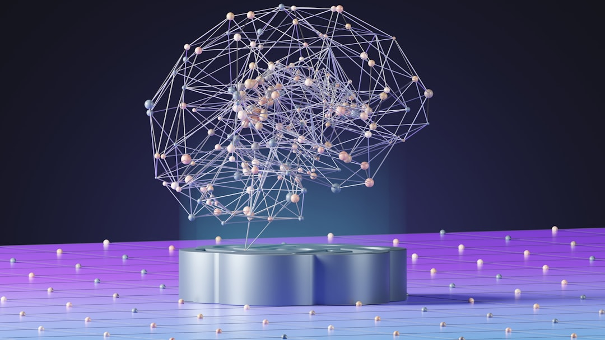
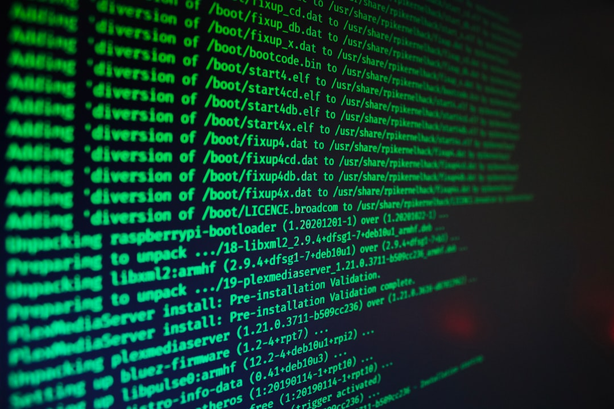

AI-Powered Phishing and Deepfake Attacks: How to Stay Protected in the Age of Intelligent Cyber Threats
In an era where artificial intelligence has become both a powerful business enabler and a sophisticated weapon in the hands of cybercriminals, organizations face an unprecedented challenge. The same technologies that drive innovation and efficiency are now being weaponized to create highly convincing phishing campaigns, realistic deepfake impersonations, and automated attack operations that can bypass traditional security measures with alarming ease.

Recent data from cybersecurity researchers indicates that AI-powered phishing attacks have increased by over 1,300% in the past year alone, while deepfake-enabled fraud attempts have surged across industries. The Indian Computer Emergency Response Team (CERT-In) has recognized this growing threat and released a comprehensive blueprint for defending against AI-assisted vulnerabilities—a critical resource for organizations navigating this evolving landscape.
The Transformation of the Cyber Threat Landscape
The cybersecurity battlefield has fundamentally changed. Where traditional phishing attacks once relied on generic templates and obvious red flags, AI-powered campaigns now leverage sophisticated language models to craft personalized, contextually accurate messages that are virtually indistinguishable from legitimate communications.
The acceleration factor is staggering. What once took cybercriminals weeks or months to orchestrate can now be accomplished in hours or days through AI automation. This compression of attack timelines has created a critical gap between threat evolution and defensive capabilities that organizations must urgently address.
Key Characteristics of AI-Assisted Cyber Exploitation
Modern AI-powered attacks exhibit several distinctive characteristics that set them apart from traditional cyber threats:
- Rapid reconnaissance and attack surface mapping: AI systems can automatically scan, analyze, and catalog potential vulnerabilities across an organization's digital infrastructure in minutes rather than weeks
- Automated vulnerability discovery and exploit development: Machine learning algorithms can identify zero-day vulnerabilities and generate custom exploits without human intervention
- Highly personalized phishing and social engineering: AI can analyze public information, social media profiles, and organizational structures to create targeted campaigns that reference specific projects, colleagues, and contextual details
- Deepfake-enabled impersonation and fraud: Advanced AI can generate convincing voice, video, and text communications that impersonate executives, vendors, or trusted contacts
- Adaptive evasion techniques: AI-powered malware can modify its behavior in real-time to evade detection systems and security controls

Understanding AI-Driven Phishing Attacks
Traditional phishing attacks often relied on volume—sending thousands of generic emails hoping a small percentage would succeed. AI has fundamentally changed this approach, enabling what cybersecurity experts call "precision phishing."
The Anatomy of an AI-Powered Phishing Campaign
Modern AI-driven phishing campaigns typically follow a sophisticated multi-stage process:
- Intelligence Gathering: AI systems scrape public information from social media, company websites, professional networks, and news sources to build detailed profiles of targets and organizations
- Context Analysis: Machine learning algorithms analyze communication patterns, organizational structures, and recent events to identify optimal timing and messaging strategies
- Content Generation: Large language models create personalized emails, messages, or documents that reference specific details, use appropriate terminology, and match the communication style of trusted sources
- Delivery Optimization: AI determines the best delivery methods, timing, and follow-up sequences to maximize success rates
- Response Analysis: The system monitors responses and adapts future campaigns based on what works most effectively
Real-World Examples of AI-Powered Phishing
Consider a scenario where an AI system targets a financial services company. The system might:
- Analyze recent press releases about a merger or acquisition
- Identify key executives and their communication patterns from public sources
- Generate emails that appear to come from the CEO discussing "urgent compliance requirements related to the merger"
- Include specific references to actual projects, deadlines, and regulatory requirements
- Use language patterns and terminology consistent with the executive's previous communications
Such attacks are incredibly difficult to detect because they contain no traditional red flags—the sender appears legitimate, the content is contextually accurate, and the request seems reasonable given current business circumstances.
The Rise of Deepfake Attacks in Enterprise Environments
Deepfake technology represents perhaps the most concerning evolution in AI-powered cyber threats. These attacks leverage advanced machine learning to create synthetic but realistic audio, video, or text content that impersonates real individuals.
Types of Deepfake Attacks Targeting Organizations
Voice Deepfakes: Attackers can create convincing audio recordings of executives or trusted contacts requesting urgent actions, such as wire transfers or credential sharing. With as little as a few minutes of recorded speech (often available from public sources like conference presentations or earnings calls), AI can generate realistic voice communications.
Video Deepfakes: More sophisticated attacks involve creating fake video calls or recordings. While current technology still has limitations, the quality is improving rapidly, and many deepfakes are now convincing enough to fool casual observation, especially in low-quality video calls.
Text-Based Impersonation: AI can analyze an individual's writing style, vocabulary, and communication patterns to generate text that closely mimics their authentic voice. This is particularly dangerous for email-based attacks targeting business processes.
Business Impact of Deepfake Fraud
The financial and operational impact of successful deepfake attacks can be devastating:
- Financial Fraud: Deepfake voice calls have already resulted in millions of dollars in fraudulent wire transfers when employees believed they were receiving instructions from executives
- Reputation Damage: Synthetic media can be used to create compromising or damaging content featuring company leaders or employees
- Operational Disruption: False communications can trigger unnecessary emergency procedures, disrupt business processes, or cause organizational confusion
- Regulatory Compliance Issues: In regulated industries, deepfake attacks could potentially trigger compliance violations or regulatory scrutiny
Technical Architecture for AI-Aware Defense
Defending against AI-powered threats requires a fundamental shift from traditional, reactive security approaches to proactive, intelligence-driven defense architectures. Organizations must implement what CERT-In terms "AI-aware security operations" that can detect and respond to the sophisticated tactics employed by AI-powered attacks.
Core Defensive Principles
The foundation of effective AI-aware defense rests on several key principles that must be integrated throughout the organization's security architecture:
Assume Breach: Traditional perimeter defense is insufficient against AI-powered attacks that can rapidly identify and exploit vulnerabilities. Organizations must design their security architecture assuming that initial compromise is inevitable and focus on rapid detection, containment, and recovery.
Zero Trust Security: Every access request, regardless of source, must be verified and validated. This is particularly critical for defending against deepfake impersonation attacks where the apparent source may seem trustworthy but is actually synthetic.
Continuous Exposure Management: AI-powered reconnaissance can identify vulnerabilities and exposed assets within hours or days. Organizations must implement continuous monitoring and rapid remediation processes that can match this pace.
Behavioral Analytics: Since AI-powered attacks often appear legitimate on the surface, defense systems must focus on detecting anomalous behavior patterns rather than relying solely on signature-based detection.
Technical Control Framework
A comprehensive technical defense framework against AI-powered threats should encompass multiple layers:
Identity and Access Security: Multi-factor authentication (MFA) becomes critical when deepfake attacks can convincingly impersonate trusted individuals. Organizations should implement adaptive authentication that considers contextual factors such as location, device, and behavioral patterns in addition to traditional credentials.
Email and Communication Security: Advanced anti-phishing controls must go beyond traditional spam filters to include AI-powered content analysis, sender verification, and behavioral anomaly detection. Implementation of SPF, DKIM, and DMARC protocols is essential, but organizations should also consider additional verification procedures for high-risk communications.
Endpoint and Server Security: Endpoint Detection and Response (EDR) and Extended Detection and Response (XDR) solutions must be capable of detecting AI-generated malware that may evade traditional signature-based detection. Behavioral monitoring and machine learning-based anomaly detection become crucial components.
Network Security and Segmentation: Microsegmentation and network isolation can limit the impact of successful AI-powered attacks by restricting lateral movement. Organizations should implement zero-trust network architectures that verify every connection attempt.
Operational Implementation Strategy
Successfully defending against AI-powered threats requires more than just technology—it demands a comprehensive operational strategy that addresses governance, processes, and human factors.
Governance and Risk Management
Effective governance begins with executive leadership understanding and prioritizing the AI threat landscape. Organizations should establish:
- AI Risk Assessment Frameworks: Regular evaluation of how AI threats could impact specific business processes, critical assets, and operational continuity
- Cross-Functional Coordination: Integration between IT security, business operations, legal, compliance, and communications teams to ensure coordinated response to AI-powered attacks
- Third-Party Risk Management: Enhanced due diligence for vendors and partners, including assessment of their AI security practices and potential exposure to AI-powered supply chain attacks
Security Operations Center (SOC) Modernization
Traditional SOC operations must evolve to address AI-powered threats effectively. This transformation includes:
AI-Assisted Detection: Implementing machine learning and behavioral analytics to identify subtle anomalies that may indicate AI-powered attacks. This includes monitoring for unusual communication patterns, unexpected privilege escalation, or anomalous access requests.
Threat Intelligence Integration: Incorporating real-time threat intelligence about AI attack techniques, indicators of compromise, and emerging threat actor capabilities into detection and response workflows.
Automated Response Capabilities: Developing Security Orchestration, Automation, and Response (SOAR) workflows that can rapidly contain and investigate potential AI-powered attacks while maintaining human oversight for critical decisions.
Workforce Preparation and Training
Human factors remain critical in defending against AI-powered attacks. Organizations must invest in comprehensive training programs that address:
- Deepfake Awareness: Training employees to recognize potential signs of synthetic media and establish verification procedures for high-risk communications
- Enhanced Phishing Awareness: Moving beyond traditional phishing training to address the sophisticated, personalized nature of AI-powered campaigns
- Incident Reporting Procedures: Clear, accessible processes for reporting suspected AI-powered attacks, including potential deepfake encounters
- Executive Protection: Specialized training for senior leadership who are high-value targets for AI-powered impersonation attacks
Industry-Specific Considerations
Different industries face varying levels of risk from AI-powered attacks and require tailored defensive approaches.
Financial Services
Financial institutions are prime targets for AI-powered fraud, particularly deepfake-enabled wire transfer fraud and sophisticated business email compromise attacks. Specific considerations include:
- Enhanced verification procedures for high-value transactions
- Voice biometric authentication systems that can detect synthetic speech
- Real-time fraud detection systems that incorporate AI-powered attack indicators
- Regulatory compliance considerations for AI-related security controls
Healthcare
Healthcare organizations face unique risks from AI-powered attacks targeting patient data and operational systems:
- Protection of electronic health records from AI-powered data exfiltration
- Securing medical devices and IoT systems from automated exploitation
- Defending against deepfake attacks that could compromise patient care communications
- Compliance with healthcare privacy regulations in the context of AI threats
Manufacturing and Critical Infrastructure
Industrial organizations must address AI threats to both IT and operational technology (OT) environments:
- Air-gapped networks and unidirectional gateways for critical OT systems
- Enhanced supply chain security to prevent AI-powered attacks through vendor compromise
- Specialized monitoring for industrial control systems and SCADA networks
- Coordination with national cybersecurity authorities for critical infrastructure protection
Implementation Roadmap and Maturity Assessment
Organizations should approach AI-aware security implementation through a structured, risk-based roadmap that considers their current maturity level and specific threat exposure.
Phase 1: Foundation Building (0-6 months)
The initial phase focuses on establishing basic defensive capabilities:
- Risk Assessment: Comprehensive evaluation of current exposure to AI-powered threats
- Asset Inventory: Complete visibility into internet-facing assets, cloud environments, and critical systems
- Basic Controls: Implementation of MFA, email security controls, and endpoint protection
- Policy Development: Creation of AI-aware security policies and incident response procedures
Phase 2: Enhanced Detection and Response (6-12 months)
The second phase builds advanced detection and response capabilities:
- SOC Modernization: Implementation of AI-assisted detection tools and behavioral analytics
- Threat Intelligence: Integration of AI threat intelligence feeds and indicators
- Advanced Training: Comprehensive workforce training on AI-powered threats
- Continuous Monitoring: Deployment of continuous security monitoring across all environments
Phase 3: Advanced Defense and Resilience (12+ months)
The final phase focuses on advanced capabilities and operational resilience:
- Predictive Analytics: Implementation of predictive threat detection and automated response
- Red Team Testing: Regular adversarial testing including AI-powered attack simulations
- Supply Chain Security: Comprehensive third-party risk management and SBOM implementation
- Continuous Improvement: Ongoing enhancement based on threat intelligence and operational learnings
Maturity Assessment Framework
Organizations should regularly assess their maturity across key domains:
Governance Maturity: Evaluation of leadership engagement, policy framework, and risk management processes
Technical Maturity: Assessment of detection capabilities, response automation, and control effectiveness
Operational Maturity: Review of incident response capabilities, workforce readiness, and continuous improvement processes
Resilience Maturity: Evaluation of business continuity, disaster recovery, and crisis management capabilities
Measuring Success and Continuous Improvement
Effective defense against AI-powered threats requires continuous measurement and improvement based on evolving threat landscapes and organizational changes.
Key Performance Indicators
Organizations should track specific metrics that reflect their readiness against AI-powered threats:
- Mean Time to Detection (MTTD): How quickly AI-powered attacks are identified
- Mean Time to Response (MTTR): Speed of containment and remediation actions
- False Positive Rate: Accuracy of AI-assisted detection systems
- Coverage Metrics: Percentage of assets and environments with appropriate monitoring
- Training Effectiveness: Employee performance on AI-aware security awareness assessments
Continuous Threat Assessment
Given the rapidly evolving nature of AI-powered threats, organizations must establish ongoing threat assessment processes:
- Regular review of emerging AI attack techniques and threat actor capabilities
- Assessment of new AI technologies and their potential security implications
- Evaluation of defensive control effectiveness against current threat landscape
- Integration of lessons learned from security incidents and near-misses
Challenges and Considerations
Implementing effective defenses against AI-powered threats presents several significant challenges that organizations must address:
Technical Challenges
Detection Complexity: AI-powered attacks often appear legitimate and may not trigger traditional security alerts. Organizations must invest in sophisticated behavioral analytics and anomaly detection capabilities.
Scale and Speed: The automated nature of AI attacks means they can operate at a scale and speed that overwhelms traditional security operations. Organizations need automated response capabilities that can match this pace.
Evolving Threat Landscape: AI attack techniques evolve rapidly, requiring continuous updates to detection rules, threat intelligence, and defensive capabilities.
Organizational Challenges
Skills Gap: Many organizations lack personnel with expertise in both AI technologies and cybersecurity, making it difficult to implement and operate AI-aware defenses effectively.
Budget Constraints: Implementing comprehensive AI-aware security controls requires significant investment in technology, training, and personnel.
Cultural Resistance: Some organizations may resist implementing new security measures that could impact user experience or operational efficiency.
Regulatory and Compliance Considerations
Organizations must navigate an evolving regulatory landscape around AI and cybersecurity:
- Compliance with data protection regulations when implementing AI-powered security tools
- Reporting requirements for AI-related security incidents
- Industry-specific regulations that may address AI security requirements
- International considerations for organizations operating across multiple jurisdictions
Future Outlook and Emerging Trends
The landscape of AI-powered cyber threats will continue to evolve rapidly, and organizations must prepare for emerging challenges:
Emerging Threat Vectors
Autonomous Attack Systems: Future AI systems may be capable of conducting fully autonomous cyber operations with minimal human oversight, requiring new defensive approaches.
AI-Powered Supply Chain Attacks: Attackers may use AI to identify and exploit vulnerabilities in software supply chains, requiring enhanced software bill of materials (SBOM) and dependency management.
Adversarial AI: Attacks specifically targeting AI systems themselves, including model poisoning, prompt injection, and adversarial examples.
Defensive Technology Evolution
AI-Powered Defense: Security tools will increasingly leverage AI for threat detection, response automation, and predictive analytics.
Quantum-Safe Cryptography: As quantum computing advances, organizations must prepare for post-quantum cryptographic standards to protect against future threats.
Zero Trust Architecture: Continued evolution toward comprehensive zero trust implementations that assume no implicit trust in any system or user.
Conclusion and Key Takeaways
The emergence of AI-powered phishing and deepfake attacks represents a fundamental shift in the cybersecurity landscape that requires immediate and comprehensive organizational response. Traditional security approaches that rely on periodic assessments, signature-based detection, and reactive response are insufficient against threats that can operate at machine speed with human-like sophistication.
Organizations must act now to:
- Assess their current exposure to AI-powered threats and develop comprehensive risk management strategies
- Implement AI-aware security controls that can detect and respond to sophisticated, automated attacks
- Modernize security operations to include behavioral analytics, threat intelligence, and automated response capabilities
- Invest in workforce training and awareness programs that address the unique characteristics of AI-powered threats
- Establish governance frameworks that provide executive oversight and cross-functional coordination for AI security initiatives
The blueprint provided by CERT-In offers a structured, implementation-oriented framework for addressing these challenges. However, success requires more than just following a checklist—it demands a fundamental shift in organizational mindset from reactive compliance to proactive, intelligence-driven defense.
As AI technology continues to advance, both the threats and defensive capabilities will evolve rapidly. Organizations that invest now in building adaptive, resilient security programs will be better positioned to defend against current threats and adapt to future challenges. Those that delay action risk falling victim to increasingly sophisticated attacks that can bypass traditional defenses with ease.
The time for action is now. The cost of preparation is significant, but the cost of compromise in the age of AI-powered cyber threats is far greater. Organizations must embrace this new reality and build security programs that can match the sophistication and speed of AI-enabled adversaries.
"The future belongs to organizations that can harness the power of AI for defense while protecting themselves against those who would use the same technologies for attack. Success requires not just technology, but a fundamental transformation in how we think about and approach cybersecurity."